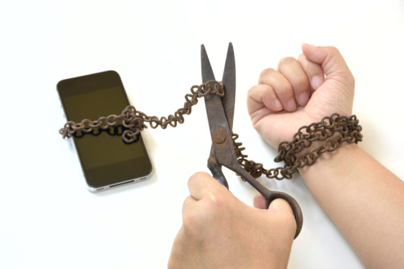

Solución a la adiccion al internet
El internet asi como cualquier cosa se puede crear una dependencia o incluso necesidad de estar conectados, muchas personas en el mundon tienen problemas que van
desde su vida personal hasta laboral o escolar

Tips para superar la adiccion al internet
2. Desconecta de internet completamente un día al mes, desde que te acuestas hasta la hora de dormir. Comprobarás la adicción actual y te concienciarás de que existe un mundo más allá de la pantalla.
2. Planea unas horas de desconexión. Durante este tiempo marcado debe estar prohibido conectarse. Aunque parezca difícil, verás que la efectividad aumenta sin las distracciones online.
3. Desactiva notificaciones de Twitter y Facebook. Durante las horas laborales configura que el móvil no te avise de notificaciones. Tampoco abras pestañas de tus perfiles en el ordenador de la oficina. Abrirlas por un momento puede hacer que termines malgastando tiempo.
4. Mensajería instantánea. Elimina las notificaciones sonoras y visuales de herramientas como Whatsapp o Telegram. Puedes mantener activo aquellas realmente importantes. Si ves que no funciona, además, deja el móvil lejos de la mesa de trabajo para que tu mente sepa que está haciendo mal en ir a cogerlo.
5. Crea dos cuentas de correo: una para el trabajo y otra para asuntos personales. Esta última sólo debe estar activada fuera de la jornada laboral.
6. Establece horarios para navegar por la red. Existen aplicaciones que permiten limitar el tiempo dedicado a una página. Pon un l a sea efectividad aumentaeso?,yejar se der un adicto a internet de hasta que nivel se es adicto a Internet y esto tambi Puedes ímite de tiempo razonable.
7. En casos extremos como época de exámenes o de entregas de trabajos, desactiva completamente el ordenador y la red el móvil. O mejor, apaga ambos para no sucumbir a la tentación.
-Inicio-
Copytight 2021, contactame por Twitter como @Linpitbird-
|